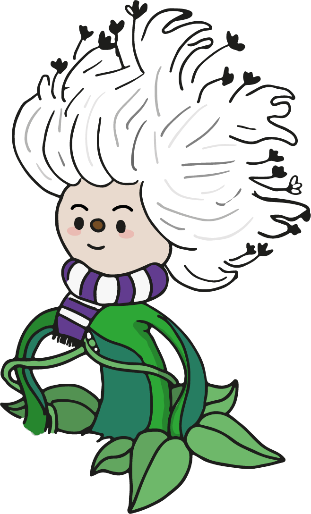

 Catalejo es una marca digital interactiva que transforma la literatura colombiana en una experiencia de juego, creación y comunidad especialmente diseñada para adolescentes. Nuestro propósito es despertar la imaginación, la creatividad y el pensamiento crítico a través de relatos transmedia, juegos narrativos y actividades participativas que invitan a explorar y reimaginar las historias nacionales desde formatos digitales innovadores.
Catalejo nace para que la literatura deje de ser una tarea para convertirse en un ritual, una aventura donde cada usuario pueda jugar, crear y ser parte de una comunidad que valora la diversidad y potencia el pensamiento narrativo. Esta es una invitación abierta a mirar el mundo con otros ojos y hacer de la lectura una experiencia inolvidable.